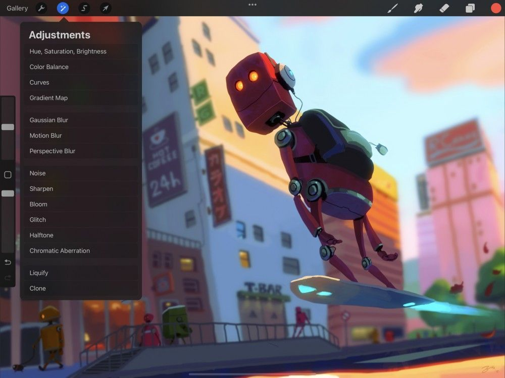

📖 Đã dịch sang tiếng Việt. Thuật ngữ chuyên môn giữ tiếng Anh — rê chuột để xem nghĩa (tooltip).
Blur
Làm mịn và mềm ảnh bằng Gaussian Blur hoặc tạo ảo giác chuyển động nhanh bằng Motion Blur. Dùng Perspective Blur để thêm hiệu ứng thu phóng kịch tính và bung tỏa theo hướng vào tác phẩm.
Gaussian Blur
Làm mịn lớp đang hoạt động để mang cho ảnh một diện mạo mềm mại, hơi mất nét. Hoàn tác, làm lại, đặt lại và hủy các điều chỉnh của bạn.


Chạm Adjustments → Gaussian Blur để vào giao diện Gaussian Blur.
Heads Up
Gaussian Blur will not work when 3D Painting.

Touch Controls (Điều khiển chạm)
Trượt sang phải và trái để thay đổi lượng Gaussian Blur.
Ở trên cùng màn hình, bạn sẽ thấy một thanh màu xanh có nhãn Slide to adjust. Thanh này hiển thị lượng làm mờ đang được áp dụng lên ảnh.
Ban đầu, nó sẽ đặt ở 0% - không có làm mờ. Kéo ngón tay sang phải để tăng lượng làm mờ, và trượt sang trái để giảm độ mờ.
Commit Changes (Lưu thay đổi)
Lưu toàn bộ thay đổi bằng một cú chạm.
Để lưu thay đổi và thoát khỏi Adjustments, hãy chạm lại vào biểu tượng Adjustments.
Để lưu thay đổi và ở lại trong Gaussian Blur, hãy chạm khung vẽ để mở Adjustment Actions rồi chạm Apply.
Motion Blur
Tạo ảo giác về tốc độ và chuyển động bằng cách áp dụng một độ mờ có vệt lên lớp đang hoạt động. Hoàn tác, làm lại, đặt lại và hủy các điều chỉnh của bạn.
Chạm Adjustments > Motion Blur để vào giao diện Motion Blur.
Heads Up
Motion Blur will not work when 3D Painting.
Touch Controls (Điều khiển chạm)
Trượt theo bất kỳ hướng nào để thay đổi lượng Motion Blur.
Ở trên cùng màn hình, bạn sẽ thấy một thanh màu xanh có nhãn Slide to adjust. Thanh này hiển thị lượng làm mờ đang được áp dụng lên ảnh.
Ban đầu, nó sẽ đặt ở 0% - không có làm mờ. Kéo ngón tay sang trái hoặc phải để tăng lượng làm mờ theo hướng chuyển động của ngón tay. Ví dụ, nếu bạn trượt ngón tay theo đường chéo, điều này sẽ tạo ra một Motion Blur theo đường chéo ở hướng đó.
Commit Changes (Lưu thay đổi)
Lưu toàn bộ thay đổi bằng một cú chạm.
Để lưu thay đổi và thoát khỏi Adjustments, hãy chạm lại vào biểu tượng Adjustments.
Để lưu thay đổi và ở lại trong Motion Blur, hãy chạm khung vẽ để mở Adjustment Actions rồi chạm Apply.
Perspective Blur
Tạo độ mờ radial (toàn phần hoặc theo hướng) cho hiệu ứng thu phóng và bung tỏa. Hoàn tác, làm lại, đặt lại và hủy các điều chỉnh của bạn.
Chạm Adjustments > Perspective Blur để vào giao diện Perspective Blur.
Heads Up
Perspective Blur will not work when 3D Painting.
Touch Controls (Điều khiển chạm)
Kéo đĩa để đặt tâm cho Perspective Blur, và trượt sang phải/trái để thay đổi cường độ.
Một đĩa sẽ xuất hiện ở giữa màn hình. Nó đặt điểm gốc cho Perspective Blur. Kéo để di chuyển nó bất cứ lúc nào trong khi tạo độ mờ.
Ở trên cùng màn hình, bạn sẽ thấy một thanh màu xanh có nhãn Slide to adjust. Thanh này hiển thị lượng làm mờ đang được áp dụng lên ảnh. Ban đầu nó sẽ đặt ở 0% - không có làm mờ.
Kéo ngón tay sang phải, ở bất kỳ đâu ngoài đĩa, để tăng lượng làm mờ. Trượt ngón tay sang trái để giảm độ mờ. Bạn cũng có thể tiếp tục di chuyển đĩa sau khi áp dụng độ mờ. Hãy làm vậy để xem hiệu ứng trông thế nào ở các vị trí khác nhau.
Giao diện
Kiểm soát và chỉnh sửa các thay đổi bằng các nút đơn giản.
Các nút dọc theo dưới cùng màn hình cung cấp hai chế độ Perspective Blur:
- Chế độ Positional tỏa độ mờ ra ngoài từ đĩa theo mọi hướng.
- Chế độ Directional chỉ tỏa độ mờ từ một phía của đĩa.
Pro Tip
When you are in Directional mode, the disc is larger and includes an arrow that displays which way your blur is pointing. You can spin this arrow around to change the blur's direction.
Commit Changes (Lưu thay đổi)
Lưu toàn bộ thay đổi bằng một cú chạm.
Để lưu thay đổi và thoát khỏi Adjustments, hãy chạm lại vào biểu tượng Adjustments.
Để lưu thay đổi và ở lại trong Perspective Blur, hãy chạm khung vẽ để mở Adjustment Actions rồi chạm Apply.
Still have questions?
If you didn't find what you're looking for, explore our video resources on YouTube or contact us directly. We’re always happy to help.